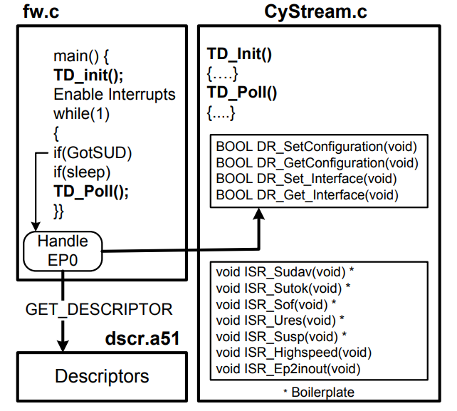
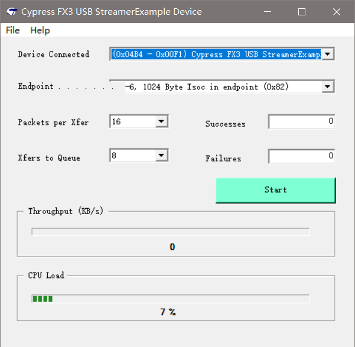

CYStream Compile
USB流模式示例编译
参考文档
代码架构

错误及解决方法
Error：
[...省略] *** FATAL ERROR L250: CODE SIZE LIMIT IN RESTRICTED VERSION EXCEEDED MODULE: C:\CYPRESS\KEIL\C51\LIB\C51S.LIB (-----) LIMIT: 1000H BYTES [...省略]
错误原因：编译的代码超过了4K的允许编译大小；
错误解决方向：
使用全功能版Keil 2版本，买是不可能买的，破解版也不想用；
精简代码，采用这个方案；
处理方法：
去掉数码管显示代码；
去掉I2C通信代码；
与USB通信相关代码有全速设备和高速设备，全速设备不可能，这年代，只能是高速设备，所以去掉全速设备代码；
编译通过：
[...省略] Program Size: data=51.5 xdata=4473 code=3994 creating hex file from "CYStream"... User command #1: ..\..\Bin\hex2bix -i -f 0xC2 -o CYStream.iic CYStream.hex Intel Hex file to EZ-USB Binary file conversion utility Copyright (c) 2012-2013, Cypress Semiconductor Inc. 4053 Bytes written. Total Code Bytes = 3988 Conversion completed successfully. "CYStream" - 0 Error(s), 3 Warning(s).
设备正常识别：
